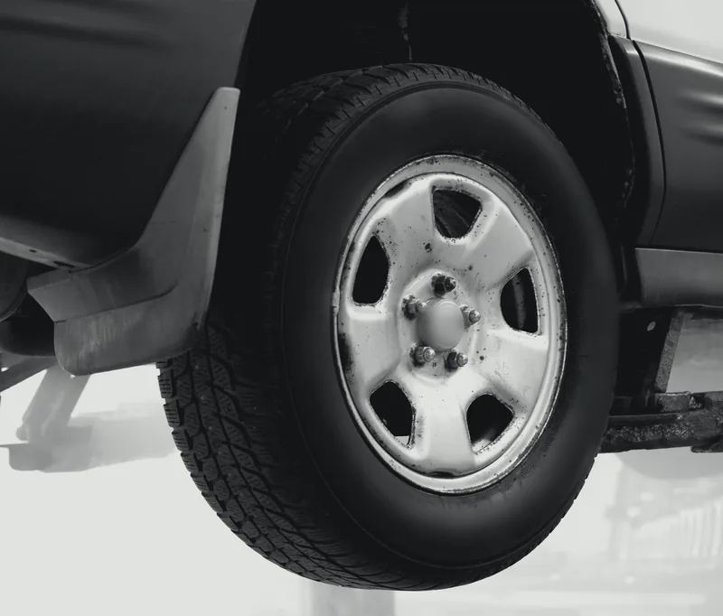
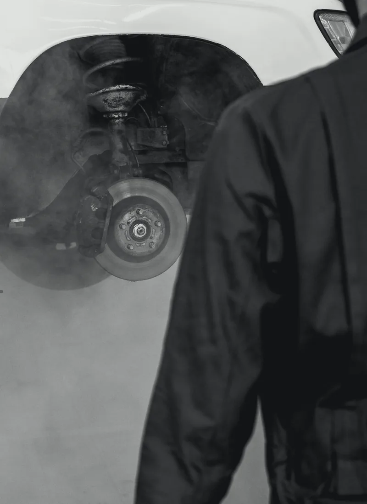
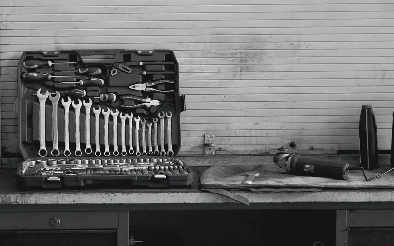
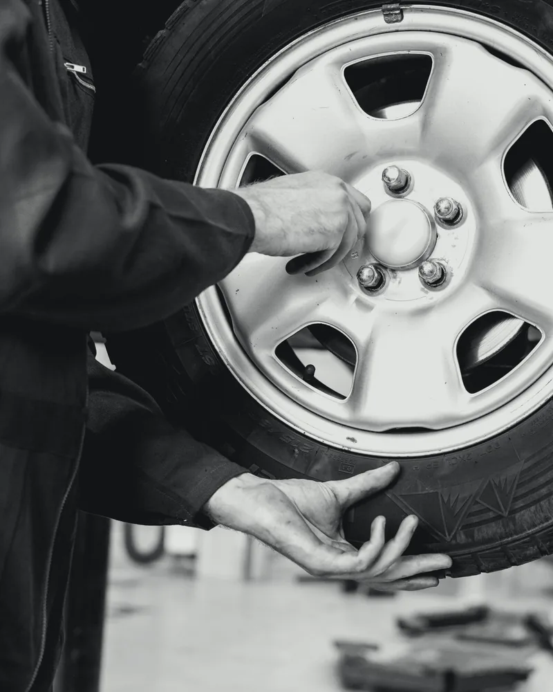

Opravíme, čo treba. Nič navyše.
Autoservis a pneuservis v Nitre. Cenu vám povieme skôr, než chytíme kľúč.
V pracovné dni 7:00 až 17:00

- Voľný termín
- do troch pracovných dní
- Náhradné auto
- 15 € na deň
- Záruka na prácu
- 24 mesiacov
Cenník bežných úkonov
Vyberte triedu auta a zaškrtnite, čo potrebuje. Zákazkový list ukáže cenu od najnižšej po najvyššiu.
Ceny sú od najmenšieho auta po SUV a dodávku, s prácou aj materiálom.
Pravidelný servis
Brzdy a podvozok
Z predných bŕzd sa do listu ráta jedna z dvoch možností, platničky sú už v cene výmeny s kotúčmi.
Pneumatiky a klimatizácia
Ceny sú s DPH, s prácou aj materiálom. Ak pri práci nájdeme niečo ďalšie, najprv vám zavoláme.

Čo ešte robíme
Na tieto práce cenu z tabuľky nepovieme. Záleží na aute a na tom, čo nájdeme pri obhliadke.
-
Hľadanie príčiny poruchy
Svieti kontrolka alebo auto trhá. Príčinu hľadáme za hodinovú sadzbu, skôr než začneme meniť diely.
-
Rozvody
Remeň alebo reťaz, kladky a vodná pumpa v jednom termíne.
-
Spojka a zotrvačník
Výmena celej sady, aby ste demontáž prevodovky neplatili dvakrát.
-
Výfuky
Zváranie, výmena tlmiča a pružných dielov, uchytenie.
-
Autoelektrika
Batéria, štartér, alternátor, svetlá a ťažné zariadenie.
-
Kontrola pred kúpou
Ojazdené auto pozrieme na zdviháku a povieme, čo ho čaká.
Hodinová sadzba je 38 €. Pred opravou dostanete cenu práce aj dielov a rozhodnete sa vy.
Dielňa

Štyri zdviháky, náradie na svojom mieste
Dve autá robíme naraz, tretí zdvihák je na pneumatiky a štvrtý držíme voľný pre tých, čo k nám dôjdu na lane. Náradie sa po každom aute vracia na miesto.

Kolesá doťahujeme rukou
Pištoľ skrutky len pritiahne. Posledný krok robíme momentovým kľúčom na hodnotu výrobcu a po 50 kilometroch vám ich zadarmo skontrolujeme.
Čo u nás neplatíte
Obhliadku pred opravou.
Auto zdvihneme, pozrieme a povieme cenu. Ak sa rozhodnete nedať ho opraviť, odchádzate bez účtu.
Prácu, ktorú ste neschválili.
Všetko nad dohodnutú sumu najprv voláme. Bez vášho áno sa na aute nič ďalšie nerobí.
Ako to u nás prebieha
Zavoláte
Poviete, čo auto robí, a dohodneme termín. Väčšinou do troch pracovných dní.
Obhliadka a cena vopred
Auto pozrieme na zdviháku a zavoláme vám cenu práce aj dielov.
Oprava
Robíme len to, čo ste schválili. Bežné úkony stihneme v ten istý deň.
Odovzdanie
Ukážeme vám staré diely, prejdeme faktúru a platíte kartou alebo v hotovosti.
Na čo sa pýtate najčastejšie
Môžem si doniesť vlastné diely?
Áno. Namontujeme ich za hodinovú sadzbu. Záruku potom dávame na prácu, na diel ju drží ten, kto vám ho predal.
Dá sa platiť kartou?
Kartou, v hotovosti aj prevodom na faktúru. Zálohu pýtame len pri dieloch na objednávku nad 300 €.
Vystavíte faktúru na firmu?
Áno, stačí nám povedať IČO pri preberaní auta. Firmám s viacerými autami vedieme servisnú históriu každého vozidla.
Auto nenaštartuje. Viete ho odtiahnuť?
Vlastný odťah nemáme. Zavolajte nám, dáme vám číslo na odťahovku, s ktorou robíme, a jeden zdvihák držíme pre takéto prípady voľný.
Môžem na auto počkať u vás?
Pri prezutí, výmene oleja a plnení klimatizácie áno, máme čakáreň s kávou a wifi. Pri dlhších opravách si vezmite náhradné auto za 15 € na deň.
Zavolajte, kým sme v dielni.
Telefón berieme počas otváracích hodín. Mimo nich nám napíšte, ozveme sa ráno.
| Pondelokdnes | 7:00 až 17:00 |
|---|---|
| Utorokdnes | 7:00 až 17:00 |
| Stredadnes | 7:00 až 17:00 |
| Štvrtokdnes | 7:00 až 17:00 |
| Piatokdnes | 7:00 až 17:00 |
| Sobotadnes | 8:00 až 12:00 |
| Nedeľadnes | zatvorené |
Cez sviatky a dni pracovného pokoja je zatvorené.
Ojničná 12, 949 01 Nitra Priemyselná zóna, druhá brána za kruhovým objazdom. Parkovanie pre šesť áut priamo pred dielňou.dielna@autoservis-ojnica.example vymyslený e-mail